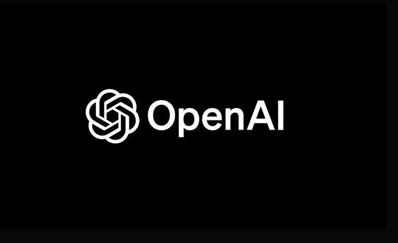

OpenAI가 연말까지 직원 8,000명으로 확대하고 기업가치 $840B에 달하며, 미 법무부는 AI 칩 중국 밀수 혁의로 3명을 기소했습니다. Google은 개인 지능 기능을 미국 전체 사용자에게 확대하고, AI 모델 상품화 우려가 커지고 있으며, McKinsey는 AI가 일자리의 12%를 자동화했다고 발표했습니다.
OpenAI plans to double its workforce to 8,000 with an $840B valuation, while the US DOJ charges three for smuggling AI chips to China. Google expands Personal Intelligence to all US users, concerns grow over AI model commoditization, and McKinsey reports AI has automated 12% of job tasks.

OpenAI가 2026년 말까지 직원 수를 현재 약 4,500명에서 8,000명으로 거의 두 배로 늘릴 계획입니다. 이는 AI 연구, 엔지니어링, 안전성 팀을 중심으로 대규모 채용이 진행될 예정이며, AI 에이전트와 엔터프라이즈 제품 수요의 급증을 반영합니다.
OpenAI plans to nearly double its workforce from roughly 4,500 to 8,000 by end of 2026. The hiring push will focus on AI research, engineering, and safety teams, reflecting surging demand for AI agents and enterprise products.
회사의 기업가치는 최근 $110B 투자 라운드를 통해 약 $840B에 달하며, 연간 매출 $25B를 넘어섰 기업공개(IPO)를 위한 초기 단계에 진입했습니다. 이는 AI 산업 전체의 성장 속도를 보여주는 지표입니다.
The company's valuation has reached approximately $840B following a $110B funding round, with annualized revenue surpassing $25B. OpenAI is reportedly taking early steps toward a public listing, potentially as soon as late 2026.
핵심 요약: OpenAI의 공격적 확장은 AI 산업이 여전히 가속 성장 단계에 있음을 보여줍니다. IPO 가능성은 AI 기업들의 새로운 자금 조달 시대를 예고합니다.
Key takeaway: OpenAI's aggressive expansion signals that the AI industry remains in an accelerating growth phase. The potential IPO heralds a new era of capital access for AI companies.

미국 법무부가 3명을 최체단 미국산 AI 칩을 중국으로 불법 우회한 혁의로 기소했습니다. 이들은 수출 통제 대상인 고성능 AI 반도체를 제3국을 경유해 중국으로 밀반출한 혁의를 받고 있습니다.
The US Department of Justice charged three individuals with conspiring to unlawfully divert cutting-edge American AI chips to China. The defendants allegedly routed export-controlled high-performance AI semiconductors through third countries to circumvent restrictions.
이번 기소는 미국 정부가 AI 기술 유출 방지에 얼마나 진지한지를 보여주는 사례입니다. 특히 NVIDIA의 최체단 GPU와 같은 AI 훈련용 반도체는 국가 안보 자산으로 분류되어 엄격한 수출 통제를 받고 있습니다.
The case demonstrates how seriously the US government takes preventing AI technology leakage. Advanced AI training semiconductors, particularly NVIDIA's cutting-edge GPUs, are classified as national security assets subject to strict export controls.
핵심 요약: AI 칩 밀수 기소는 미·중 AI 기술 전쟁이 법적 영역으로 확대되고 있음을 보여줍니다. 반도체 공급망의 지정학적 리스크가 심화되고 있습니다.
Key takeaway: The chip smuggling charges show the US-China AI technology war expanding into the legal arena. Geopolitical risks in the semiconductor supply chain are intensifying.

Google이 '개인 지능(Personal Intelligence)' 기능을 미국 전체 사용자에게 확대합니다. 이 기능은 Gemini가 Gmail, Photos, YouTube 등 연결된 앱의 데이터를 활용해 더 맥락에 맞는 응답을 제공하는 것입니다.
Google is rolling out its Personal Intelligence feature to all US users. The feature allows Gemini to draw on data from connected apps like Gmail, Photos, and YouTube to deliver more context-aware, personalized responses.
기존에는 유료 사용자에게만 제공되던 이 기능이 무료 사용자까지 확대되면서, AI 개인화 경쟁이 본격화됩니다. 사용자의 이메일, 사진, 시청 기록 등을 통합적으로 분석해 "어제 받은 영수증 찾아줘"나 "지난달 찍은 사진 중 최고 샷 골라줘" 같은 요청에 자연스럽게 응답할 수 있습니다.
Previously available only to paid subscribers, this expansion to free users intensifies the AI personalization race. By integrating email, photos, and viewing history, Gemini can naturally respond to requests like "find yesterday's receipt" or "pick the best shot from last month's photos."
핵심 요약: Google의 개인 지능 확대는 AI 업체들이 '개인화'를 핵심 전장으로 삼고 있음을 보여줍니다. 편리함과 프라이버시 사이의 균형이 중요한 이슈로 떠오르고 있습니다.
Key takeaway: Google's Personal Intelligence expansion shows AI companies making personalization a key battleground. The balance between convenience and privacy is emerging as a critical issue.

OpenClaw가 상용 수준의 AI 모델을 공개하며 '채팅GPT 모먼트'를 만들었습니다. 이는 소규모 기업이나 오픈소스 프로젝트가 대형 AI 기업과 경쟁할 수 있는 시대가 도래했음을 의미하며, AI 모델이 '상품(commodity)'이 될 수 있다는 우려를 불러일으켰습니다.
OpenClaw released a commercial-grade AI model, creating its own "ChatGPT moment." This signals an era where smaller firms and open-source projects can compete with major AI companies, sparking concerns that AI models may become commodities.
DeepSeek의 R1 모델에 이어 OpenClaw의 등장은 AI 모델의 차별화가 점점 어려워지고 있음을 보여줍니다. 대형 AI 기업들은 모델 성능만으로는 경쟁 우위를 유지하기 어려워지며, 애플리케이션 생태계와 사용자 경험이 새로운 차별화 포인트가 되고 있습니다.
Following DeepSeek's R1 model, OpenClaw's emergence shows that differentiating AI models is becoming increasingly difficult. Major AI companies find it harder to maintain competitive advantage on model performance alone, with application ecosystems and user experience becoming new points of differentiation.
핵심 요약: AI 모델의 상품화는 기술 민주화의 신호이지만, 동시에 기존 AI 기업들의 수익 모델에 도전이 됩니다. 시장의 관심이 '모델'에서 '애플리케이션'으로 이동하고 있습니다.
Key takeaway: AI model commoditization signals technology democratization, but also challenges existing AI companies' revenue models. Market focus is shifting from "models" to "applications."

McKinsey 글로벌 연구소의 2026년 3월 보고서에 따르면, AI가 지난 2년간 경제 전반의 업무 12%를 자동화했습니다. 그러나 AI에 노출된 부문의 순고용은 거의 변화가 없으며, 직업과 소득 수준에 따라 큰 차이를 보였습니다.
According to McKinsey Global Institute's March 2026 report, AI has automated 12% of current job tasks across the economy over the past two years. However, net employment in AI-exposed sectors is approximately flat, with significant variation by occupation and income level.
이 보고서는 'AI가 일자리를 매우 빠르게 대체한다'는 우려와 'AI는 일자리에 영향이 없다'는 낙관론 모두에 도전합니다. 실제로는 업무의 재편성이 일어나고 있으며, 저소득 직종에서의 영향이 불균형적으로 크게 나타나고 있습니다.
The report challenges both the fear that AI is rapidly replacing jobs and the optimism that AI has no employment impact. In reality, job tasks are being restructured, with disproportionately larger effects on lower-income occupations.
핵심 요약: AI의 고용 영향은 '0 또는 1'이 아닌 복잡한 양상입니다. 정책 입안자들은 재훈련 프로그램과 소득 불평등 해소에 더 집중해야 합니다.
Key takeaway: AI's employment impact is a complex spectrum, not a binary outcome. Policymakers need to focus more on retraining programs and addressing income inequality.
직원 8,000명 확대와 $840B 기업가치는 AI 업계의 성장 속도를 상징적으로 보여줍니다. AI 기업의 IPO 러시가 다가오고 있습니다.
The expansion to 8,000 employees and $840B valuation symbolize the AI industry's growth velocity. An IPO rush for AI companies is approaching.
밀수 기소는 미·중 기술 경쟁이 단순한 무역 제재를 넘어 형사 처벌 수준으로 심화되고 있음을 보여줍니다.
The smuggling charges show US-China tech competition escalating beyond trade sanctions to criminal prosecution.
Google이 개인 지능을 무료 사용자에게 확대하면서, AI 기업들의 경쟁 초점이 '모델 성능'에서 '개인화 경험'으로 이동하고 있습니다.
With Google expanding Personal Intelligence to free users, AI companies' competitive focus is shifting from "model performance" to "personalized experience."
McKinsey 보고서는 AI가 일자리를 없애는 것이 아니라 재편성하고 있음을 보여주며, 저소득층에 불균형적 영향이 있음을 경고합니다.
McKinsey's report shows AI is restructuring jobs rather than eliminating them, warning of disproportionate impact on lower-income workers.